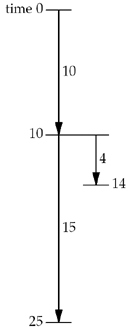
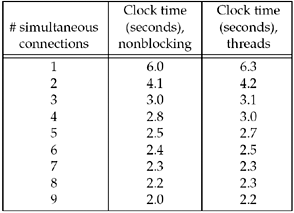

| [ Team LiB ] |
|
16.5 Nonblocking connect: Web ClientA real-world example of nonblocking connects started with the Netscape Web client (Section 13.4 of TCPv3). The client establishes an HTTP connection with a Web server and fetches a home page. Often, that page will have numerous references to other Web pages. Instead of fetching these other pages serially, one at a time, the client can fetch more than one at the same time using nonblocking connects. Figure 16.12 shows an example of establishing multiple connections in parallel. The leftmost scenario shows all three connections performed serially. We assume that the first connection takes 10 units of time, the second 15, and the third 4, for a total of 29 units of time. Figure 16.12. Establishing multiple connections in parallel.
In the middle scenario, we perform two connections in parallel. At time 0, the first two connections are started, and when the first of these finishes, we start the third. The total time is almost halved, from 29 to 15, but realize that this is the ideal case. If the parallel connections are sharing a common link (say the client is behind a dialup modem link to the Internet), each can compete against each other for the limited resources and all the individual connection times might get longer. For example, the time of 10 might be 15, the time of 15 might be 20, and the time of 4 might be 6. Nevertheless, the total time would be 21, still shorter than the serial scenario. In the third scenario, we perform three connections in parallel, and we again assume there is no interference between the three connections (the ideal case). But, the total time is the same (15 units) as the second scenario given the example times that we choose. When dealing with Web clients, the first connection is done by itself, followed by multiple connections for the references found in the data from that first connection. We show this in Figure 16.13. Figure 16.13. Complete first connection, then multiple connections in parallel. To further optimize this sequence, the client can start parsing the data that is returned for the first connection before the first connection completes and initiate additional connections as soon as it knows that additional connections are needed. Since we are doing multiple nonblocking connects at the same time, we cannot use our connect_nonb function from Figure 16.11 because it does not return until the connection is established. Instead, we must keep track of multiple connections ourself. Our program will read up to 20 files from a Web server. We specify as command-line arguments the maximum number of parallel connections, the server's hostname, and each of the filenames to fetch from the server. A typical execution of our program is solaris % web 3 www.foobar.com / image1.gif image2.gif \ image3.gif image4.gif image5.gif \ image6.gif image7.gif The command-line arguments specify three simultaneous connections: the server's hostname, the filename for the home page (/, the server's root page), and seven files to then read (which in this example are all GIF images). These seven files would normally be referenced on the home page, and a Web client would read the home page and parse the HTML to obtain these filenames. We do not want to complicate this example with HTML parsing, so we just specify the filenames on the command line. This is a larger example, so we will show it in pieces. Figure 16.14 is our web.h header that each file includes. Figure 16.14 web.h header.nonblock/web.h
1 #include "unp.h"
2 #define MAXFILES 20
3 #define SERV "80" /* port number or service name */
4 struct file {
5 char *f_name; /* filename */
6 char *f_host; /* hostname or IPv4/IPv6 address */
7 int f_fd; /* descriptor */
8 int f_flags; /* F_xxx below */
9 } file[MAXFILES];
10 #define F_CONNECTING 1 /* connect() in progress */
11 #define F_READING 2 /* connect() complete; now reading */
12 #define F_DONE 4 /* all done */
13 #define GET_CMD "GET %s HTTP/1.0\r\n\r\n"
14 /* globals */
15 int nconn, nfiles, nlefttoconn, nlefttoread, maxfd;
16 fd_set rset, wset;
17 /* function prototypes */
18 void home_page(const char *, const char *);
19 void start_connect(struct file *);
20 void write_get_cmd(struct file *);
Define file structure2–13 The program reads up to MAXFILES files from the Web server. We maintain a file structure with information about each file: its name (copied from the command-line argument), the hostname or IP address of the server to read the file from, the socket descriptor being used for the file, and a set of flags to specify what we are doing with this file (connecting, reading, or done). Define globals and function prototypes14–20 We define the global variables and function prototypes for the functions that we will describe shortly. Figure 16.15 shows the first part of the main program. Figure 16.15 First part of simultaneous connect: globals and start of main.nonblock/web.c
1 #include "web.h"
2 int
3 main(int argc, char **argv)
4 {
5 int i, fd, n, maxnconn, flags, error;
6 char buf[MAXLINE];
7 fd_set rs, ws;
8 if (argc < 5)
9 err_quit("usage: web <#conns> <hostname> <homepage> <file1> ...");
10 maxnconn = atoi(argv[1]);
11 nfiles = min(argc - 4, MAXFILES);
12 for (i = 0; i < nfiles; i++) {
13 file[i].f_name = argv[i + 4];
14 file[i].f_host = argv[2];
15 file[i].f_flags = 0;
16 }
17 printf("nfiles = %d\n", nfiles);
18 home_page(argv[2], argv[3]);
19 FD_ZERO(&rset);
20 FD_ZERO(&wset);
21 maxfd = -1;
22 nlefttoread = nlefttoconn = nfiles;
23 nconn = 0;
Process command-line arguments11–17 The file structures are filled in with the relevant information from the command-line arguments. Read home page18 The function home_page, which we will show next, creates a TCP connection, sends a command to the server, and then reads the home page. This is the first connection, which is done by itself, before we start establishing multiple connections in parallel. Initialize globals19–23 Two descriptor sets, one for reading and one for writing, are initialized. maxfd is the maximum descriptor for select (which we initialize to –1 since descriptors are non-negative), nlefttoread is the number of files remaining to be read (when this reaches 0, we are finished), nlefttoconn is the number of files that still need a TCP connection, and nconn is the number of connections currently open (which can never exceed the first command-line argument). Figure 16.16 shows the home_page function that is called once when the main function begins. Figure 16.16 home_page function.nonblock/home_page.c
1 #include "web.h"
2 void
3 home_page(const char *host, const char *fname)
4 {
5 int fd, n;
6 char line[MAXLINE];
7 fd = Tcp_connect(host, SERV); /* blocking connect() */
8 n = snprintf(line, sizeof(line), GET_CMD, fname);
9 Writen(fd, line, n);
10 for ( ; ; ) {
11 if ( (n = Read(fd, line, MAXLINE)) == 0)
12 break; /* server closed connection */
13 printf("read %d bytes of home page\n", n);
14 /* do whatever with data */
15 }
16 printf("end-of-file on home page\n");
17 Close(fd);
18 }
Establish connection with server7 Our tcp_connect establishes a connection with the server. Send HTTP command to server, read reply8–17 An HTTP GET command is issued for the home page (often named /). The reply is read (we do not do anything with the reply) and the connection is closed. The next function, start_connect, shown in Figure 16.17, initiates a nonblocking connect. Figure 16.17 Initiate nonblocking connect.nonblock/start_connect.c
1 #include "web.h"
2 void
3 start_connect(struct file *fptr)
4 {
5 int fd, flags, n;
6 struct addrinfo *ai;
7 ai = Host_serv(fptr->f_host, SERV, 0, SOCK_STREAM);
8 fd = Socket(ai->ai_family, ai->ai_socktype, ai->ai_protocol);
9 fptr->f_fd = fd;
10 printf("start_connect for %s, fd %d\n", fptr->f_name, fd);
11 /* Set socket nonblocking */
12 flags = Fcntl(fd, F_GETFL, 0);
13 Fcntl(fd, F_SETFL, flags | O_NONBLOCK);
14 /* Initiate nonblocking connect to the server. */
15 if ( (n = connect(fd, ai->ai_addr, ai->ai_addrlen)) < 0) {
16 if (errno != EINPROGRESS)
17 err_sys("nonblocking connect error");
18 fptr->f_flags = F_CONNECTING;
19 FD_SET(fd, &rset); /* select for reading and writing */
20 FD_SET(fd, &wset);
21 if (fd > maxfd)
22 maxfd = fd;
23 } else if (n >= 0) /* connect is already done */
24 write_get_cmd(fptr); /* write() the GET command */
25 }
Create socket, set to nonblocking7–13 We call our host_serv function (Figure 11.9) to look up and convert the hostname and service name, returning a pointer to an array of addrinfo structures. We use only the first structure. A TCP socket is created and the socket is set to nonblocking. Initiate nonblocking connect14–22 The nonblocking connect is initiated and the file's flag is set to F_CONNECTING. The socket descriptor is turned on in both the read set and the write set since select will wait for either condition as an indication that the connection has finished. We also update maxfd, if necessary. Handle connection complete23–24 If connect returns successfully, the connection is already complete and the function write_get_cmd (shown next) sends a command to the server. We set the socket to nonblocking for the connect, but never reset it to its default blocking mode. This is fine because we write only a small amount of data to the socket (the GET command in the next function) and we assume that this command is much smaller than the socket send buffer. Even if write returns a short count because of the nonblocking flag, our writen function handles this. Leaving the socket as nonblocking has no effect on the subsequent reads that are performed because we always call select to wait for the socket to become readable. Figure 16.18 shows the function write_get_cmd, which sends an HTTP GET command to the server. Figure 16.18 Send an HTTP GET command to the server.nonblock/write_get_cmd.c
1 #include "web.h"
2 void
3 write_get_cmd(struct file *fptr)
4 {
5 int n;
6 char line[MAXLINE];
7 n = snprintf(line, sizeof(line), GET_CMD, fptr->f_name);
8 Writen(fptr->f_fd, line, n);
9 printf("wrote %d bytes for %s\n", n, fptr->f_name);
10 fptr->f_flags = F_READING; /* clears F_CONNECTING */
11 FD_SET(fptr->f_fd, &rset); /* will read server's reply */
12 if (fptr->f_fd > maxfd)
13 maxfd = fptr->f_fd;
14 }
Build command and send it7–9 The command is built and written to the socket. Set flags10–13 The file's F_READING flag is set, which also clears the F_CONNECTING flag (if set). This indicates to the main loop that this descriptor is ready for input. The descriptor is also turned on in the read set and maxfd is updated, if necessary. We now return to the main function in Figure 16.19, picking up where we left off in Figure 16.15. This is the main loop of the program: As long as there are more files to process (nlefttoread is greater than 0), start another connection if possible and then use select on all active descriptors, handling both nonblocking connection completions and the arrival of data. Initiate another connection, if possible24–35 If we are not at the specified limit of simultaneous connections, and there are additional connections to establish, find a file that we have not yet processed (indicated by a f_flags of 0) and call start_connect to initiate the connection. The number of active connections is incremented (nconn) and the number of connections remaining to be established is decremented (nlefttoconn). select: wait for something to happen36–37 select waits for either readability or writability. Descriptors that have a nonblocking connect in progress will be enabled in both sets, while descriptors with a completed connection that are waiting for data from the server will be enabled in just the read set. Handle all ready descriptors39–55 We now process each element in the array of file structures to determine which descriptors need processing. If the F_CONNECTING flag is set and the descriptor is on in either the read set or the write set, the nonblocking connect is finished. As we described with Figure 16.11, we call getsockopt to fetch the pending error for the socket. If this value is 0, the connection completed successfully. In that case, we turn off the descriptor in the write set and call write_get_cmd to send the HTTP request to the server. See if descriptor has data56–67 If the F_READING flag is set and the descriptor is ready for reading, we call read. If the connection was closed by the other end, we close the socket, set the F_DONE flag, turn off the descriptor in the read set, and decrement the number of active connections and the total number of connections to be processed. There are two optimizations that we do not perform in this example (to avoid complicating it even more). First, we could terminate the for loop in Figure 16.19 when we finish processing the number of descriptors that select said were ready. Next, we could decrease the value of maxfd when possible, to save select from examining descriptor bits that are no longer set. Since the number of descriptors this code deals with at any one time is probably less than 10, and not in the thousands, it is doubtful that either of these optimizations is worth the additional complications. Figure 16.19 Main loop of main function.nonblock/web.c
24 while (nlefttoread > 0) {
25 while (nconn < maxnconn && nlefttoconn > 0) {
26 /* find a file to read */
27 for (i = 0; i < nfiles; i++)
28 if (file[i].f_flags == 0)
29 break;
30 if (i == nfiles)
31 err_quit("nlefttoconn = %d but nothing found", nlefttoconn);
32 start_connect(&file[i]);
33 nconn++;
34 nlefttoconn--;
35 }
36 rs = rset;
37 ws = wset;
38 n = Select(maxfd + 1, &rs, &ws, NULL, NULL);
39 for (i = 0; i < nfiles; i++) {
40 flags = file[i].f_flags;
41 if (flags == 0 || flags & F_DONE)
42 continue;
43 fd = file[i].f_fd;
44 if (flags & F_CONNECTING &&
45 (FD_ISSET(fd, &rs) || FD_ISSET(fd, &ws))) {
46 n = sizeof(error);
47 if (getsockopt(fd, SOL_SOCKET, SO_ERROR, &error, &n) < 0 ||
48 error != 0) {
49 err_ret("nonblocking connect failed for %s",
50 file[i].f_name);
51 }
52 /* connection established */
53 printf("connection established for %s\n", file[i].f_name);
54 FD_CLR(fd, &wset); /* no more writeability test */
55 write_get_cmd(&file[i]); /* write() the GET command */
56 } else if (flags & F_READING && FD_ISSET(fd, &rs)) {
57 if ( (n = Read(fd, buf, sizeof(buf))) == 0) {
58 printf("end-of-file on %s\n", file[i].f_name);
59 Close(fd);
60 file[i].f_flags = F_DONE; /* clears F_READING */
61 FD_CLR(fd, &rset);
62 nconn--;
63 nlefttoread--;
64 } else {
65 printf("read %d bytes from %s\n", n, file[i].f_name);
66 }
67 }
68 }
69 }
70 exit(0);
71 }
Performance of Simultaneous ConnectionsWhat is the performance gain in establishing multiple connections at the same time? Figure 16.20 shows the clock time required to fetch a Web server's home page, followed by nine image files from that server. The RTT to the server is about 150 ms. The home page size was 4,017 bytes and the average size of the 9 image files was 1,621 bytes. TCP's segment size was 512 bytes. We also include in this figure, for comparison, values for a version of this program that we will develop in Section 26.9 using threads. Figure 16.20. Clock time for various numbers of simultaneous connections. Most of the improvement is obtained with three simultaneous connections (the clock time is halved), and the performance increase is much less with four or more simultaneous connections.
|
| [ Team LiB ] |
|